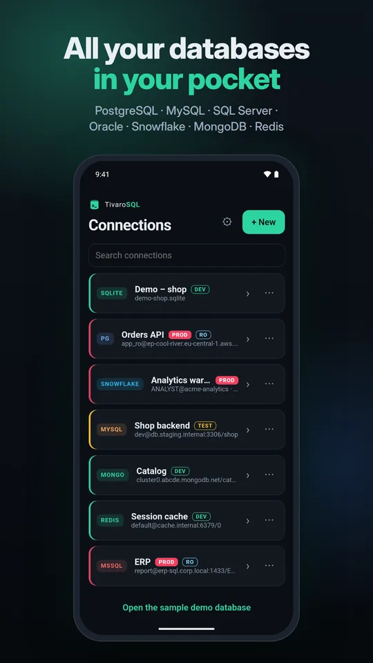
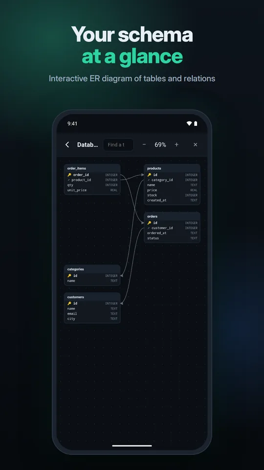
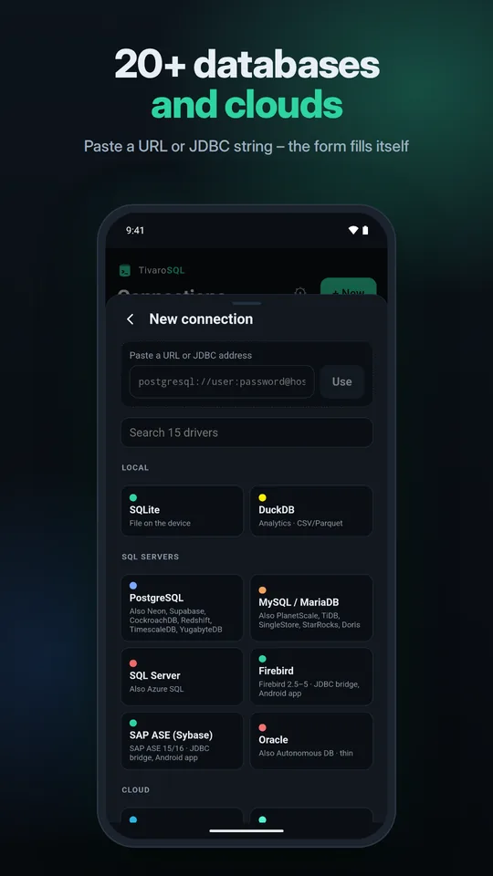

Your databases.
In your pocket.
Connect to PostgreSQL, MySQL, SQL Server, Oracle, Snowflake, MongoDB, Redis and 20+ other databases. Write SQL, browse tables and fix data from your phone – and get a full desktop IDE on Samsung DeX.
- ✓ No account
- ✓ No ads, no tracking
- ✓ Passwords in Android Keystore

Everything you need to work with a database – on a phone
SQL editor
Highlighting, table and column suggestions above the keyboard, formatter, query tabs, history and templates.
Data grid
Sort, filter, export to CSV / JSON / Excel. Edit rows with an SQL preview before saving.
Charts
Turn any query into a bar or line chart with one tap.
ER diagram & EXPLAIN
See your schema at a glance and find slow queries with readable plans.
Safe on production
DEV / TEST / PROD tags, read-only mode, confirmation before changes, fingerprint lock.
Desktop on DeX
Plug in a monitor for a three-pane IDE: navigator, editor and details.
20+ databases and clouds
Screenshots






Free and Pro
Running SQL, browsing and editing tables, every database engine and the desktop layout are free. Pro – a one-time purchase or a monthly subscription – unlocks unlimited connections, tabs and history, SSH tunnel, ER diagram, EXPLAIN, schema compare, import and all export formats.
Guides
Connect to a private database from your phone with an SSH tunnel
Step-by-step: reach a PostgreSQL, MySQL, SQL Server or Oracle database inside a private network from Android using an SSH tunnel through a bastion host.
Your phone as a desktop SQL IDE (Samsung DeX, USB-C)
Use an Android phone as a desktop SQL IDE: connect it to a monitor with Samsung DeX or USB-C and TivaroSQL Studio switches to a three-pane layout with navigator, editor and details.
Frequently asked questions
Is TivaroSQL Studio free?
Yes. The app is free to download and the core features are free. Pro is optional.
Which databases are supported?
PostgreSQL, MySQL, MariaDB, SQL Server, Oracle, SQLite, DuckDB, ClickHouse, Snowflake, Turso, MongoDB, Redis, Cassandra and compatible cloud services such as Neon, Supabase, PlanetScale, Azure SQL and Amazon RDS.
Does my data go through your servers?
No. The phone connects directly to the database you choose. There is no account, no analytics and no tracking.
Is it safe to use on production?
Mark connections as PROD to confirm every change, use read-only mode and lock the app or single connections with a fingerprint or PIN.
Is there an iPhone version?
Not yet – TivaroSQL Studio is available for Android.